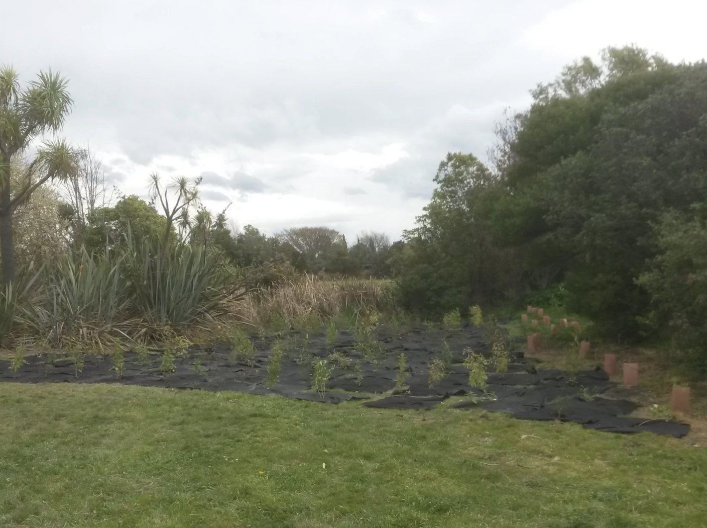

ECO-ACTION NURSERY TRUST
Home
How can I help
What have we done
Donate

WHAT HAVE WE DONE
Eco action was founded in 2016. We've since planted more than 42,000 plants, and continue to expand our
capacity and membership with the help of the community. Eco-Action has established 23 satellite nurseries
around Christchurch, and continue to establish more. With your help, we want to keep exploding the number of
plantings we do every year, so that we, and those that come after us can enjoy a thriving environment.
We've planted Akeake, Black seeded sedge, Cabbage tree, Carex secta, Coprosma propinqua, Coprosma, Robusta,
Corokia cotoneaster, Five Finger, Flax cookianum, Flax Tenax, Giant Rush, Griselinia litoralis, Hebe
koromiko, Hebe small leaf, Kahikatea, Kanuka, Kowhai microphylla, Kowhai prostrate, Lacebark, Horeria,
Lancewood ferox, Lancewood straight, Lophomyrtus, Manuka, Marbleleaf, Muhlenbechia astonii, Mysine
australis, Ngaio, Oleria paniculata, Pittosporum eugenoides, Pittosporum tenuifolium, Ribbonwood Plagianthus
regius, Toitoi, Totara, Windgrass, and Wineberry.
PLAND FOR 2023
In 2023, we'll again be running four plantings, each with around 3000 plants being put in the ground. In
addition, we'll be providing the city with even more plants than before, and we're considering expanding our
plantings by enlisting local business to give a helping hand. A day out of the office might be nice. Please
contact us to organise a planting day: ecoactionnt@gmail.com
We'll be doubling our production of seedlings to a whopping 65,000 plants to prepare for 2024 and beyond.
We hope you'll join us! Please keep in touch on our Facebook page.
HIGHLIGHTS FROM 2022
We planted 13,000 plants over four-ish planting days, and provided the city with a further 5500 plants that were
planted around the Red Zone.
We continued to ramp up production of seedlings so that we could meet our goal of planting 30,000 plants in
2023. To achieve this, we now have two community groups and 21 satellite nursery schools growing plants. We
introduced 70x70mm pots, to more efficiently cultivate fast growing species. We began work on a transit nursery
to store the sheer volumes of plants we're growing. We began planting our important kahikatea and tōtara with
1x1m weedmat to ensure their survival. We recorded several instructional videos to help our satellite nurseries
produce healthy plants, and participate in more tasks.
We also laid the ground work for new ways to move stuff around, to cope with all the plants.
We received around $30,000 of funding from the CCC, anonymous donors, schools, and awards, which is all
absolutely invaluable for our ever growing work. We were also given access to enough land by the CCC to continue
our plantings into 2023.